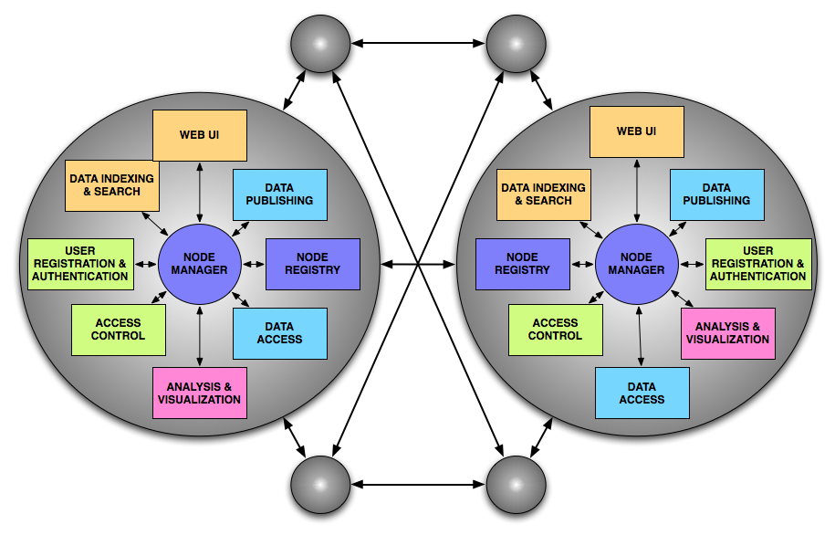
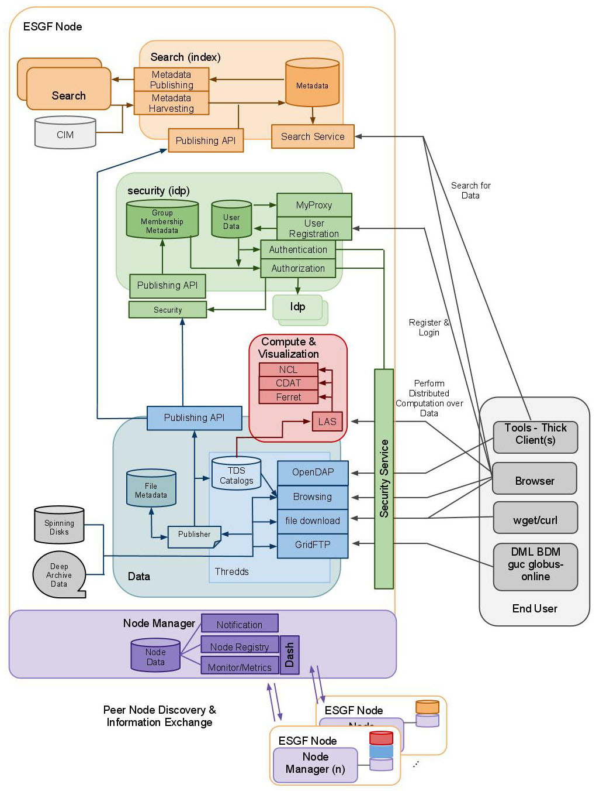

ESGF Node Design
The ESGF architecture is that of a global system of distributed Nodes, which
interoperate with other according to a peer-to-peer paradigm. This means that
there is not a rigid distinction of roles between different Nodes, rather each
node can expose different services according to how it is configured, and can
act as the provider or the consumer of services depending on the situation. In a
peer-to-peer system, Nodes can join or leave the federation dynamically, without
affecting the operations of the other Nodes. This is in stark contrast to a
traditional architecture, where the server represents a single point of failure
for the operations of multiple clients. There are two main characteristics that
make ESGF a peer-to-peer system:
- The modularity and configurability of the ESGF software stack, which
allows each Node to expose a graduated set of services depending on the specific
site requirements.
- The establishment of federation protocols that allow the exchange of
information from Node to Node on an equalitarian basis, without the existence of
special central locations where the information is aggregated.
These two characteristics are described in more detail below.

The ESGF Software Stack
A common ESGF Software Stack is deployed at each Node in the federation to
provide services for data, metadata and user management. The installation can be
configured to install all or part of the available services, depending on the
site needs, and possibly to replicate some of the services across multiple
servers at the same site. Specifically, the following flavors of ESGF Node
can be installed:
-
Data Node: includes services for publishing and serving data, namely:
- The ESGF Node Manager. The ESGF Node Manager is a web application that
mediates the peer-to-peer interaction among all the Nodes in the federation.
Its main purpose is create and expose the ESGF Registry, a document that
contains critical inter-operability information such as the name and type of
each Node, its available services and URL endpoints, its CA certificate, etc.
- The ESGF Publisher, and associated Postgres relational database.
The ESGF Publisher is a desktop application that allows to publish data into
a Node. The publishing workflow starts with extracting metadata from files
on disk, storing it on the Node database, creating THREDDS XML catalogs and
finally publishing the catalogs to the Node publishing service. Postgres is
a popular freely available relational database that is used in ESGF to store
all metadata harvested from the ESGF publisher, as well as user account
information.
- The Thredds Data Server, configured with the ESGF security
filters. The Thredds Data Server (TDS), developed by Unidata, represents
the standard mechanism through which an ESGF Node delivers its data to the
clients. The TDS includes functionality for serving data in a variety of
forms and protocols: full files HTTP download, OpenDAP sub-setting, GIS
products via WMS and WCS, etc. The ESGF installation procedure configures
the TDS with a set of special ESGF filters that intercept any data request,
and enforce the access control policies established for that dataset by
interacting with the appropriate ESGF Security Services deployed throughout
the federation.
- The ESGF Security Services. The ESGF Security framework includes
functionality for distributed access control throughout the federation. It
is composed of client-side components (the access filters and Openid
Relying Party) that protect access to the data, and server-side components
(the Attribute and Authorization services) that can be queried to gather all
necessary information to make an access control decision. The framework
supports access both by browsers (via OpenID authentication), and desktop
clients and libraries (via X509 certificates).
- The GridFTP server. The GridFTP server, developed by the Globus
alliance, is a high performance protocol for reliable data transfer. It
includes a server, deployed on an ESGF Node, and a client-side library that
the user must deploy on their desktop.
-
IdP Node: includes services for authenticating users:
- The OpenID Identity Provider web application. The OpenID Identity
Provider (IdP) allows users to register and authenticate with the system,
including Single-Sign-On functionality for browser-based access throughout
the federation.
- The Globus SimpleCA and My Proxy server. The My Proxy server,
developed by NCSA, is used to issue short term certificates that can be used
by client libraries and toolkits to authenticate the user during a data
product request. The certificates are signed by the locally installed Globus
Simple Certificate Authority (CA).
-
Index Node: includes the applications necessary to index and search
metadata:
- The Apache Solr engine. Apache Solr is a high performance, scalable
web application for storing and searching metadata.
- The ESGF Search back-end services. The ESGF Search module includes
facilities for harvesting external metadata repositories (such as the
THREDDS XML catalogs produced by the ESGF Publisher), and for searching the
distributed metadata indexes deployed within the federation.
- The ESGF Web Portal application. The ESGF Web Portal is a web
application that contains the user interface to many of the other ESGF
modules. It exposes web pages for registering users, searching for data,
downloading data etc.
-
Compute Node: includes services for data analysis and visualization,
namely:
- The Live Access Server. The Live Access Server (LAS), developed by
NOAA/PMEL, is an analysis and visualization engine that allows users to
request advanced data and imaging products from multiple ESGF Nodes at once.
Internally, it relies on the TDS catalogs and OpenDAP services for
configuration and remote data access. It can be configured with a pluggable
visualization engine such as Ferret (the default) or UV-CDAT.
-
Future modules:
- ESGF Dashboard. The ESGF Dashboard is a web application intended for
system administrators to monitor the status of all services deployed at each
Node.
